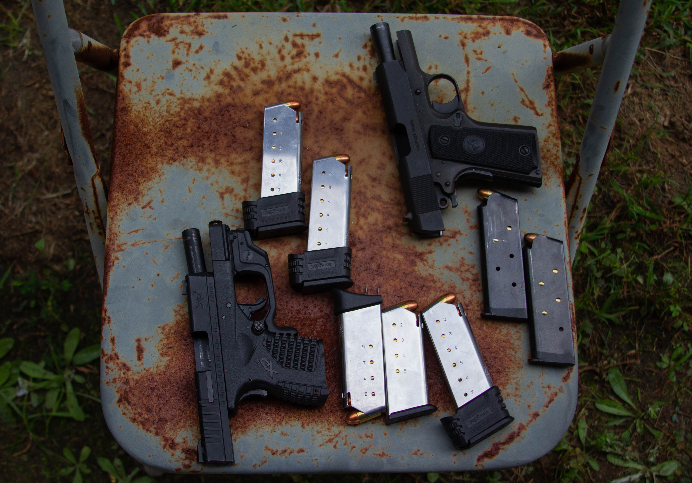

GRAHAM — The routine ring of a bell sends students to buses and math teacher Richard Miller to his car. Once his wheels roll past the middle school’s grounds, Miller pulls over to unpack his trunk. Within moments, his 9-millimeter handgun is comfortably concealed by his waist.
On most days, the 57-year-old drives east toward Academy Sports + Outdoors, a sporting goods discount store chain, where he works part-time at the gun counter. The firearms most commonly bought by Miller’s day-to-day customers are concealable semi-automatic handguns.
When not explaining algebra to his students, or selling bullets to his regulars, Miller is training locals how to conceal and carry handguns.
As of 2018 there were more than 17.25 million active concealed handgun carry permits in the U.S., according to an annual reportfrom the Crime Prevention and Research Center — a 273% increase from 2007.
North Carolina is a concealed carry and shall-issue state, which means that while a license is required for a resident to conceal carry a handgun, the individual does not need to demonstrate “good cause” to carry the weapon.
The North Carolina State Bureau of Investigation records the number of active permits in the state. For more than two decades that number has grown from fewer than 22,000 in 1997 to more than 654,000 this October.
Every North Carolina county has shown an increase in permits in the last decade.
Life, laws and liberals
In the six years Miller has been a gun owner, he’s acquired six guns — a rifle, a shotgun, a revolver and three pistols. But as a man who wants to “try them all,” Miller says it’s still “not enough.”
The self-proclaimed born-again Christian and part-time concealed carry instructor, who doesn’t conceal the wooden cross resting on his sternum, is praying for an Armalite rifle this Christmas.
 Richard Miller shows Alamance resident Tom Shanklin how to use the sight on a handgun during a concealed carry class on Sept. 14, 2019. Photo by Anton L. Delgado | Elon News Network.
Richard Miller shows Alamance resident Tom Shanklin how to use the sight on a handgun during a concealed carry class on Sept. 14, 2019. Photo by Anton L. Delgado | Elon News Network.“I didn’t know anything about firearms. I didn’t know anything about ammunition. I didn’t know anything about different calibers. So, I just started researching and learning more about it and then I realized that there were other firearms out there I wanted to own,” Miller said. “Then I just thought, I would really like to become an instructor.”
Now, at least once a month, Miller and Crystal Mann, the instructor who taught him how to conceal carry, co-host classes as part of the Concealed Carry Alamance organization.
“There are a lot of stereotypes that go along with gun owners, especially from the South, but like any stereotype it’s not true,” Mann said. “And say what you will about the South, but no one retires and goes to the North.”
The approximately eight-hour class costs $80 in North Carolina. It covers state laws, federal legislation, basic firearm safety measures and includes a live fire exercise and a final quiz. Classes usually end with the notarization of participants’ concealed carry permits.
Like every other county in the state, Alamance has shown a consistent increase of citizens with concealed carry permits — with 9,878 active permits as of Oct. 1, 2019, compared to 2,080 in 2009.
Miller’s monthly classes, which he says keep growing, average 15 to 20 students from “all walks of life.”
“In terms of demographics it’s everybody,” Miller said. “Male, female, old, young, gay, straight, everybody wants to conceal ... all races, everybody and I’m just happy to help.”
According to John Lott, president of the CPRC and author of the annual concealed carry report, North Carolina is one of the few states that record demographic data of permit holders. The unique SBI data shows that in 2012 women constituted 21.3% of the state’s concealed carry permit holders. Within the next five years that increased to 28.7%.
According to Beth Starosta-Desmond, assistant special agent in charge at the SBI, after a “recent review of [its] statues” the bureau can “no longer provide” the public updated data regarding the demographics of permit holders.
Data taken from 1996 to 2016 categorizes Asians, American Indians and blacks as the racial minorities with the greatest number of concealed carry permits in the state.
In Lotte’s annual report, which is based on the same data, he wrote that in terms of concealed carry permit holders “the growth rate for blacks is still about twice as fast as that for whites.”
Payge Tinnin, a black 32-year-old gun owner and resident of Alamance County, was one of the first students to arrive at Miller and Mann’s concealed carry class on Sept. 14, 2019.
 Payge Tinnin looks at a photo Instructor Crystal Mann took of her during a live-fire exercise on Sept. 14, 2019. Photo by Anton L. Delgado.
Payge Tinnin looks at a photo Instructor Crystal Mann took of her during a live-fire exercise on Sept. 14, 2019. Photo by Anton L. Delgado. Despite being a legal gun owner, and having the right to openly carry her handgun, Tinnin felt that pursuing a concealed carry permit was worth it.
“Having a concealed carry permit will let me feel safe in a private way that won’t freak people out at the same time,” Tinnin said. “I’ve never wanted to call attention to myself and concealed carry is the best way to stay safe under the radar.”
Tinnin attributes her interest in owning and training with handguns to her two sons, whom she wants to be able to protect in any situation.
“I have two boys I need to be watching out for. If I’m ever in a dangerous situation I wouldn’t be able to fight someone off,” Tinnin said. “With a gun, now I stand a chance.”
The rationale of purchasing guns for personal safety and protecting loved ones is incredibly common, according to David Yamane, assistant professor of sociology at Wake Forest University in Winston-Salem, who studies gun culture.
Examples of some of the concealable semi-automatic handguns that concealed carry permit holders own. Photo by Anton L. Delgado | Elon News Network.
Yamane is a self-proclaimed liberal and a concealed carry permit holder, who runs a blog titled "Gun Culture 2.0."The purpose of his site is to understand the country’s shift from Gun Culture 1.0. — based on hunting and recreational shooting — to Gun Culture 2.0 — based on concealed carry and armed self-defense.
“Guns are commonly seen as an equalizer,” Yamane said. “If you are armed and trained correctly, all of a sudden size and strength, in any situation, stops mattering.”
In his 2017 study titled "The sociology of U.S. gun culture," Yamane wrote that “the motivations for gun ownership are complex, the majority of gun owners today — especially new gun owners — point to self-defense as the primary reason for owning a gun.”
“People need to remember that power is empowering and firepower is even more so,” Yamane said.
Whatever the intention of carrying a concealed handgun might be, the jurisdiction of state and federal laws protecting the right to bear arms, even with a permit, ends on educational property in North Carolina.
Unpacking for class
Every morning, before driving to Wake Forest, Yamane, who usually carries a concealable semi-automatic handgun, has to lock his firearm in the car.
Miller has the same daily ritual on his way to class.
State law prohibits any person, including concealed carry permit holders, from carrying a firearm on educational property or at curricular or extracurricular activities sponsored by a school. A new law passed in 2015 allowed for firearms to be carried in a vehicle on school grounds. However, the person may only unlock the door to let someone in or out. If the firearm is being moved inside the car, the door must be locked.
“Being a responsible gun owner and concealed carrier means you have to always be completely aware of where you are, what you’re carrying and how you’re carrying,” Miller said.
 Shanklin and his wife, Faith, listen to Richard Miller's lecture about where a concealed carry permit may not be valid on Sept. 14, 2019. Photo by Anton L. Delgado | Elon News Network.
Shanklin and his wife, Faith, listen to Richard Miller's lecture about where a concealed carry permit may not be valid on Sept. 14, 2019. Photo by Anton L. Delgado | Elon News Network.According to Miller, abiding by these laws at Elon University, a campus that intertwines itself with the town of Elon, requires constant vigilance.
Private institutions, like Elon University, can determine its own rules in regards to the presence of firearms on educational property.
The regulations of Campus Safety and Police “strictly prohibit the possession of any weapons on university property or at university-related events. This includes any firearm, even with the possession of a valid concealed carry permit. This prohibition extends to firearms locked inside of vehicles, while on university property.”
Joel Thomas, a community liaison sergeant for Campus Police, said that all issued rules and regulations are meant to keep the community safe.
The only sanctioned firearms on campus are the ones on the waists of the 21 campus police officers. Thomas declined to comment on the necessity of these firearms.
According to Thomas, officers rarely use their firearms and mostly respond to cases that have nothing to do with guns.
However, last spring Kevin Li, who was a sophomore, was arrested for having a semi-automatic shotgun in his Danieley apartment.
In an email to the student body about the incident, Jon Dooley, vice president of student life, wrote that Li “was taken into custody without resistance or incident and has been charged with felony possession of a weapon on campus.”
Li was later charged with a felony for knowingly carrying and owning a gun on educational property. He is no longer listed on Elon’s student directory.
Posts on Li’s personal Instagram account show that he had owned the shotgun for less than a month. On April 7, Li published a photo of himself shooting the shotgun with the caption “I decided if I really had to use a gun to protect my life, I might as well get something extremely effective.”
The incident at Elon University occurred a day after a gunman opened fire at the University of North Carolina Charlotte, killing two people and injuring four others.
Li could not be reached over social media or email. His case is still currently pending.